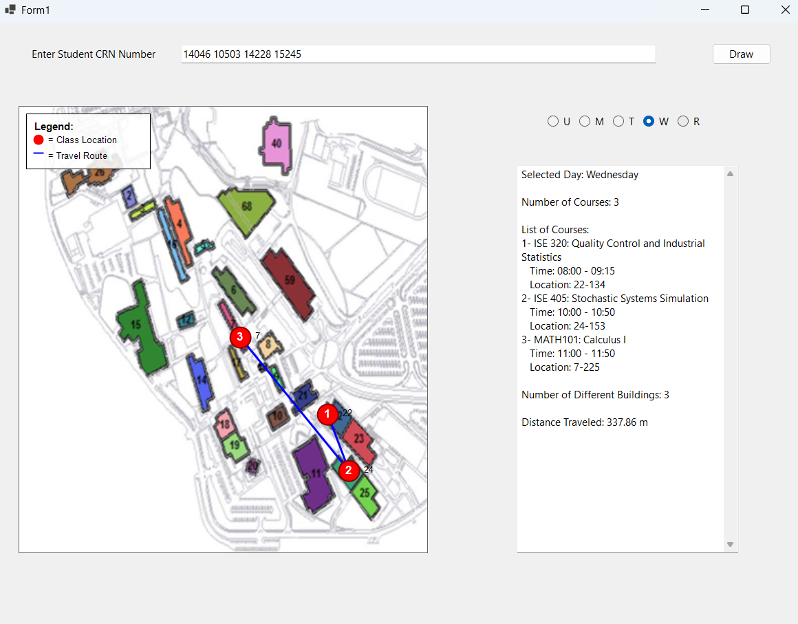
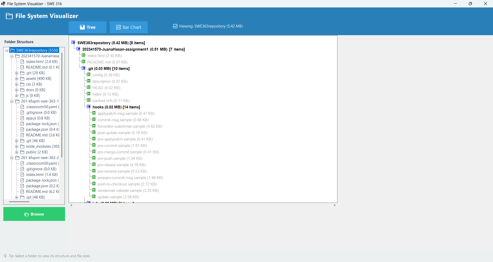

KFUPM Map
A web application that allows KFUPM students to enter their course CRNs and visualize their schedule on the campus map. It shows class locations, the route between buildings, and the total travel distance for the selected day.
Hi, I'm Juana Hasan, a Software Engineering student at KFUPM with a concentration in Data Science and Analytics. I'm interested in software development and working with data to understand problems and build useful solutions. I enjoy learning new technologies, improving my programming skills, and exploring different areas of software engineering.

A web application that allows KFUPM students to enter their course CRNs and visualize their schedule on the campus map. It shows class locations, the route between buildings, and the total travel distance for the selected day.

A web application that visualizes folders and files in an organized and interactive way. It provides tree and chart views to display directory structure and file sizes, helping users understand how their storage is distributed.